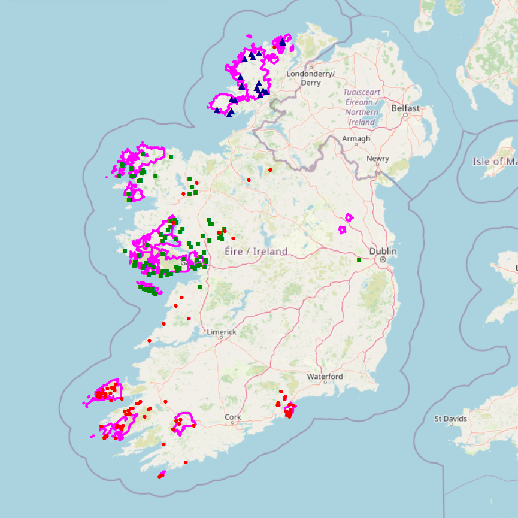
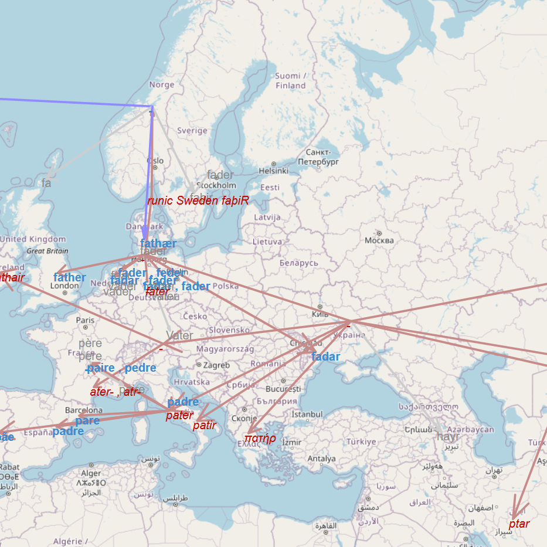

duilinn's GitHub page
Hi, these are some projects I have worked on, both in university and in my free time.
Dúchas maps
Search 300,000+ pages of Irish folklore and local tradition collected in the 1930s, in English and Irish, and view the results of queries on a map.
Made using React, Node.js and Leaflet.
© 2023 National Folklore Collection, UCD

Final Year Project
This is my final year project in Computer Science and Language. Visualises the etymology of a number of words from the Oxford English Dictionary on a map, illustrating the relationship between words in various languages.
Made using Python, Folium and Leaflet.
